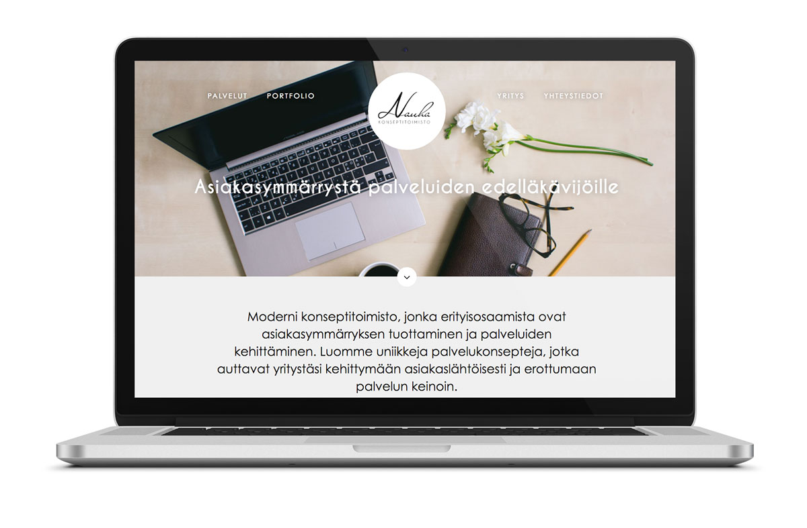
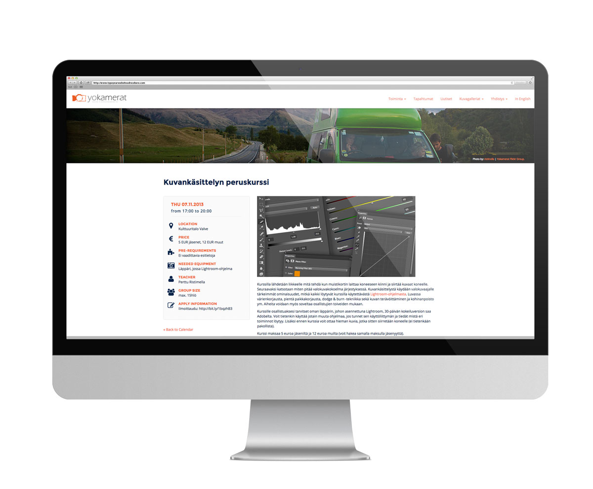

Semantic HTML5 · AngularJS
SCSS/LESS · Gulp · Git
Responsive · Reactive
Progressive · Graphic & Web Design
Wordpress · REST
Node.js · Google Cloud · AWS
Hi! My name is Perttu Ristimella. I am a full-stack web developer and a designer living in Helsinki, but born and raised in Finnish Lapland. I am passionate about responsive web design, semantic HTML and CSS, modern web technologies and development workflow. I appreciate beautifully designed and carefully crafted products and services. My ultimate target is to combine my business studies and practical developer skills to create something outstanding and meaningful. Currently I'm working at Gapps.
Below you can see some of my work in the Internets. Check out my LinkedIn -profile for more work experience and Github for nerdier stuff.
When: 2012 - 2013
In short: Lead front-end designer and developer in multiple projects.
Technologies learned: jQuery, Viidakkostore, Sivuviidakko, Postiviidakko, HTML emails, Javascript filtering, CSS quirks, Photoshop
I worked as a lead front-end developer and lead designer in multiple project ranging from e-commerce and websites, to Javascript UIs and HTML newsletters. I started out as an intern and improved my developer skills really fast. In no time, I was able to handle complex website projects and guide new interns as well. In addition to basic front-end projects, I was trusted to develop more special and tailored solutions, such as Javascript UI’s and designing UI for Viidakko's Intranet. I was also a key developer of a new Javascript product filtering plugin, which increased the speed of browsing products and decreased the server workload significantly.
When: 8/2014
Konseptitoimisto Nauha is a brand new concept office, which was the first case I did as freelancer. The site was designed to be simple, yet informative and modern. Minna Viitalähde did branding and graphic design, which laid a solid foundation for me to design the website to match the brand image that she created.
The site is build on Wordpress with a highly customized theme. Developed to be mobile-first responsive and have crisp images in every screen. As always, I try to learn some new techniques in each project and SVG imagery was the one in this one. In addition to the site, I took Mari's portrait and the background image.
Graphic Design by Minna Viitalähde

When: 1/2014
The newest edition of the site was my side project, which I used to exercise responsive design and development for Wordpress. The previous site that was also developed by me, needed updating both in design, backend and usability aspects.
I built a new theme from ground up with high customization such as custom post types for events and news. The whole site was built on responsiveness in mind and keeping the site simple to be updated by anyone in the organization.
New stuff I learnt during the development was using LESS in production site, using _underscores -framework and customize Wordpress in greater extent.
